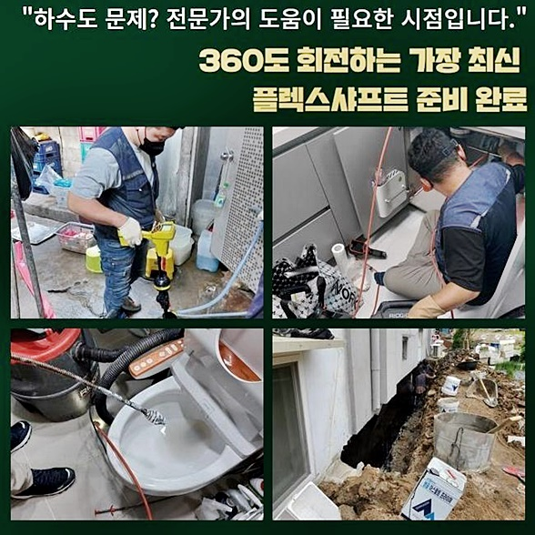
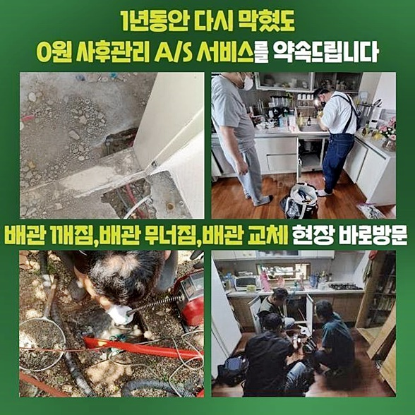
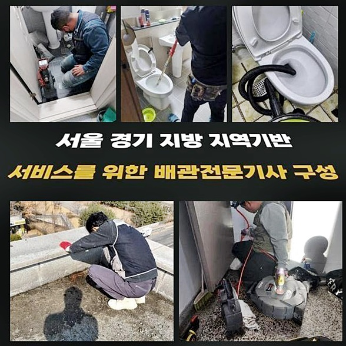
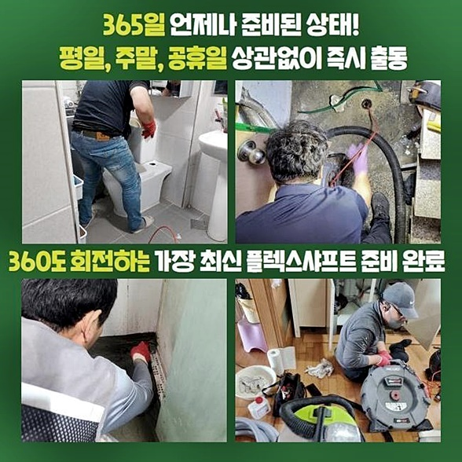
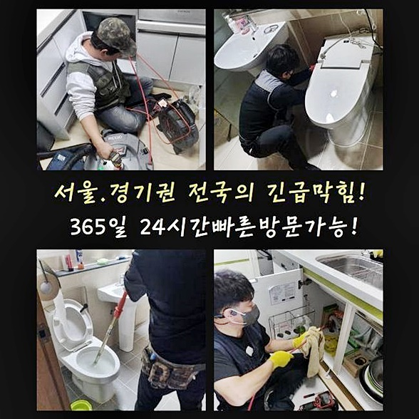

🏠 구로구 개봉동싱크대배수관역류 온수동 오수맨홀청소 설비하는곳
용인 싱크대막힘 전문 시공 후기

📋 작업 개요
- 위치: 용인
- 서비스 유형: 싱크대막힘, 하수구막힘, 배관막힘, 맨홀막힘, 누수수리, 역류해결, 뚫는업체, 배관청소, 고압세척, 설비공사, 배관보수
- 작업 일시: 2024. 8. 5. 20:56
- 업체명: 하수구수사대 (010-5615-2118)
🔍 문제 상황
구로구 개봉동싱크대배수관역류 온수동 오수맨홀청소 설비하는곳
시급하게 달려와 달라는 요구라 하더라도 길게 지연하지 않고 보수작업을 해드린다는 결심을 하고 있습니다
또한 든든한 준비가 든든하게 완비되어 있으므로 상황에 맞는 공법으로 비정상적인 부분을 뚫어내 드렸어요
문제를 감지한 즉시 연락주셔서 솔루션을 적용할 수 있었고 시공이 끝난 후에 즉각 이용하실 수 있었습니다
오늘은 심각한 수준의 역행 상황까지는 벌어지지 않았지만 보일러시설의 고장으로인해 돌이킬 수 없는 사고까지 생겨날 수 있었던 케이스로 보였습니다
막힘사태를 눈치채자마자 저희를 찾아내게 되어 행운이라고 말하셨는데 방치 기간이 길어졌다면 추가적 금액이 발생할 수 있었습니다
작은 결점이라도 신속하게 바로잡아 주어야만 더 심화된 상황을 억제할 수 있는 방책이 됩니다
막힘 문제가 발견됐다고 말해주셔서 즉각적으로 확인하고 봉인된 타겟을 해소해 드렸던 상황이었어요
동일한 사건의 재발이 생겨버리기 전에 기민하고 퀄리티높게 고칠 수 있도록 확인 작업을 간간히 추가하며 하수구시설을 고쳐드립니다
늦은시간인데도 불구하고 전화주셔서 감사했기에 설비 전문업체로서 언제 어디라고 하더라도 전문적 조치를 취해드리는 건 당연한 처사라고 여겨요
문제를 점검한 후 속도감있는 대처를 제공해 드리며 다양한 도구를 현장에 가져가니 무슨 문제점이 있더라도 관통을 완수할 수 있습니다
그대로 무시하면 사안은 극복될 수 있어보여도 장기화가 되어버리면 더 커다란 사고로 확산될 위험이 있습니다

🔎 원인 분석
💡 전문가 진단: 정밀 진단 장비를 사용하여 슬러지의 고착 여부를 판명하고 타격/세척 작업을 실시했습니다.
하수관은 워낙 예민하기에 물을 받아서 부어버리면 길이 트이진 않을까 싶더라도 사실상 불가능에 가깝습니다
배관 전용 카메라를 활용하여 정확한 오류의 원인을 검토하고 그에 맞춘 솔루션을 적용해서 효율적으로 해당 난제를 처리해 드리고 있어요
게다가 다채로운 숙련된 지식을 바탕으로 확실한 검토와 빠른 조치를 취하여 뛰어난 완수도를 내 드리고 있어요
작업을 통해 물길이 트이면 내시경장치를 깊숙히 넣어서 배관 속의 현황을 우선 판별해야 했습니다
카메라는 좁다란 배수로의 모든 면을 찍어주는 카메라와 밝혀주는 불빛이 있는데요
막힘문제를 야기시킨 이물질의 특성과 오염되어 버린 범주가 어느정도인지를 제대로 알아차릴 수 있게 됩니다
피부 각질이나 머리카락 등이 커다랗게 집적되어 있었길래 목표물을 잡고 작업에 착수했죠
고객님 역시 카메라의 모니터링을 하면서 설비의 내면을 볼 기회를 드렸는데 머리카락 뭉치가 이정도로 한가득 나올줄 예상못했다 하셨어요
카메라 장치를 넣음으로써 실시간으로 분석하여 치밀하게 세척에 임하지 않으면 트러블이 되풀이되고 맙니다!
보편적인 막힘 사안은 오래두면 마치 돌덩이처럼 말라버리기 때문에 대응이 더욱 복잡해지고 맙니다
간소화된 장비로 뚫는 활동으로는 완전한 향상을 소유하기는 힘들기 때문에 하수도에 대한 전문적인 개입을 요청하는 게 현명합니다
오늘 찾았던 곳은 주거 상업이 모인 건물로 딱봐도 낡아보였었고 여러 호수가 한 건물에 공생하는 형태였어요!

🔧 작업 과정
물이 흐르는 하수관의 사용량이 많기때문에 하수처리 시설의 오류가 발현될 가능성이 높아요
고여있는 물이 쾌속으로 폐기되지 않고 집적되면 배관 내부에서 하자가 생겨날 수 있으므로 늘상 체크를 해줘야 해요
상황을 두루 점검하고 올바른 해결책이 도입된다면 건물 내에 막대한 훼손이 나타나는 양상을 방어할 수 있습니다
막힘이 오래 간다면 하수구가 깨져버려서 누수까지도 터져나오게 되는데 이는 건물에 대한 컨디션에 불안정을 초래하여 광범위한 공사로 귀결됩니다
미미한 양이라고 간과할 수 있지만 계속해서 쌓여만 간다면 더욱 강도높게 형성돼서 청결관리하기 난감한 상황으로 치달을 수 있기에 조기에 조치해야 합니다
카메라를 통해 이물질이 감지가 된다면 샤프트라는 도구를 통하여 철저하게 청소해 내는 것이 제일 변화가 극적이예요
관로에 카메라를 넣고 세척을 끝낸 배관 속을 재점검을 해주고서 이물질을 소멸시키는 작업이 필요한 겁니다
남아있는 잔량이 보이면 적시에 소거함으로써 나중에 빚어질 수 있는 사안을 막아설 수 있어요
일단 세정에 들어가면 디테일한 작업을 거쳐서 파이프 속을 깔끔하게 유지하는 세심함이 필요해요!
샤프트기계의 특성은 내부를 스케일링해 주는 맞춤 툴이라고 보면 됩니다
기계의 끝에 있는 노커가 빠른 속도로 돌며 벽체에 결합되어 있는 잔여물을 정리정돈해요
앞서 언급했 듯 오염원은 생각보다 쉽게 관로 내로 이동한다면 세월이 흘러갈수록 장애요소가 커져버립니다
막힘건이 오래 처리가 안되면 다수의 인력과 자본이 필요한 상황으로 전락합니다
단단한 파이프였다고 해도 시간이 흘러가면서 취약해지니 하수구의 갖은 문제점들을 낳을 지도 모릅니다
배관이 낡을수록 누적된 찌꺼기도 막대하기 때문에 물의 유속을 제동걸리게 만들 수 있고 사세를 점차 확장해 나가다가 좁은 관로에 들어차 버립니다
설비의 안정성을 점검하고 세정작업도 거쳐가야 하며 시설물이 부실해 지지 않게끔 신규 배관에 비해서 배관건강에 보다 신경써야 합니다
하수구의 출입구를 통해 기름기가 뭉친 슬러지같은 불순물이 울컥대며 올라오기도 하므로 과도한 압력을 내려주려면 바쁘시더라도 전문 청소를 자주 해주는 과정에 중점을 두어야 합니다
오염물이 긴 파이프라인에 덕지덕지 붙어있다면 고압세척의 물줄기의 힘으로 손상되지 않는 선에서 정리하는게 효과도 좋고 빠릅니다
정확도 떨어지는 셀프조치 대신에 막힘의 초기단계부터 전문가의 지원을 통해서 명확하게 막힌상황을 진단하고 말끔한 해소방법을 취하는 꼼꼼함을 필두로 해야합니다
만일 매커니즘에 대한 이해도가 미미한 분이라면 무대포로 작업을 밀고나가지 말고 전문적 조치가 있기까지 놔두는 편이 안전합니다!


✅ 작업 완료
서투르게 건드리면 배관이 갈라지거나 동강나는 등의 처리에 비용이 많이 드는 보완공사가 절실해 지는 사태가 빚어져서 부담스러우실 겁니다
탄탄한 작업방향 수립과 말끔한 청소 단계를 통해 하수가 원활하게 이동하게 해드리고 당당하게 말씀드릴 수준인지 다시금 관측하여 안정성을 확보해요
항상 든든한 장비력을 기반으로 하니서 고객님의 곤란함을 얼른 개조해 드리려고 내 일처럼 임하고 있습니다
옥외 시설도 수습하는 대형장비까지 완비된 업체이기 때문에 어떤 조건일지라도 문제 없이 고칠 수 있어요
하수 유속이 느릿해지는 사태가 생길 시에는 늦은 시간대라도 조치해달라 말만 해주시면 다년간의 스킬을 발휘해서 깨끗한 하수도로 탈바꿈시켜 드리겠습니다



⚠️ 베란다 누수 및 방수 관리 방법
- ✅ 비가 많이 올 때 창틀 주변이나 아래층 천장에 얼룩이 생기는지 정기적으로 확인해 보세요.
- ✅ 우수관 주변 실리콘 마감이 들뜨거나 깨진 틈새가 있는지 손상 여부를 수시로 체크하세요.
- ✅ 베란다 바닥 타일의 줄눈(메지)이 소실되면 그 틈으로 물이 침투하여 누수가 유발됩니다.
- ✅ 누수 의심 증상 발견 시 방치하면 아래층 손실이 커지므로 즉시 전문가의 진단을 받으십시오.
💡 핵심 정리
- 확실한 장비 작업(내시경 점검 및 샤프트 스케일링)으로 원인을 뿌리 뽑습니다.
- 작업 후 1년 이내에 동일한 부위 재발 시 100% 무상 A/S 서비스를 보장합니다.
- 서울 · 경기 · 인천 전 지역에 24시간 언제든 긴급 출동할 수 있도록 항시 대기 중입니다.
❓ 자주 묻는 질문 (FAQ)
🚨 용인 싱크대막힘 문제로 고민이신가요?
정확한 원인 진단과 확실한 시공으로 재발 없는 해결을 약속드립니다.
24시간 긴급 출동 | 서울 · 경기 · 인천 전지역 | 1년 내 재발 시 무상 A/S